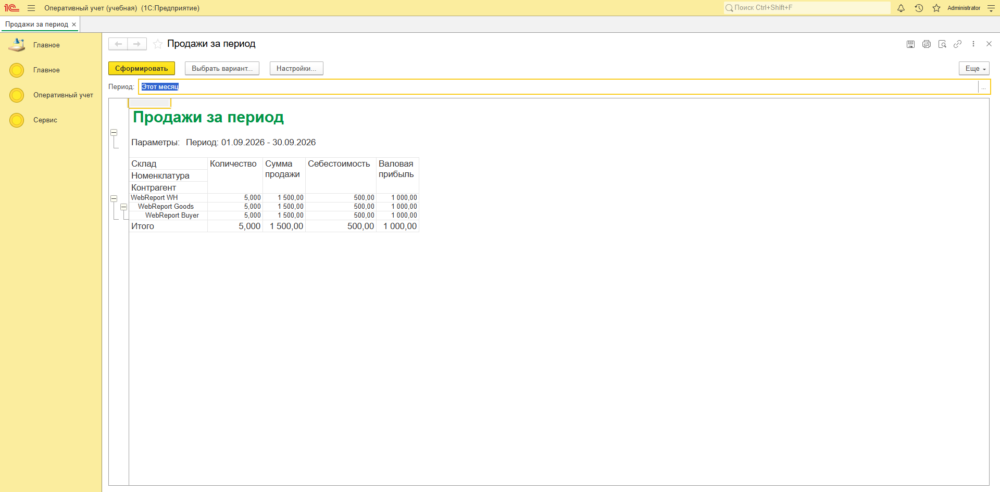
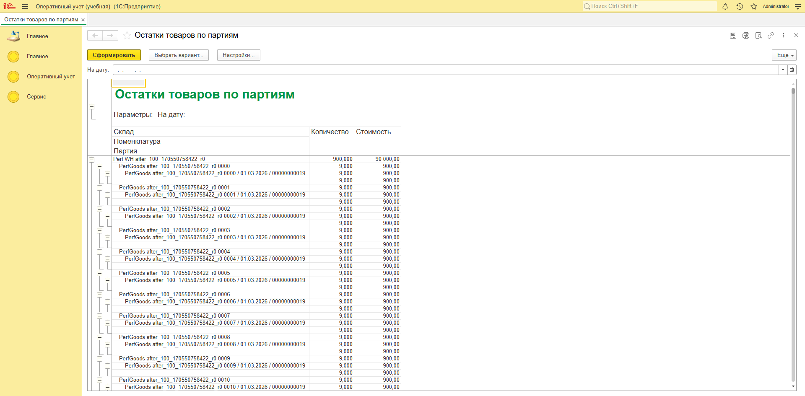

Блок «Оперативный учет»: оптовая торговля, партионный учет, FIFO / LIFO / по средней, контроль остатков, отчеты на СКД. Конфигурация собрана, база создана, код написан, 23 сценария прогнаны, узкое место найдено и ускорено в 4,4 раза, клиентские отчеты проверены в веб-клиенте — без единого клика в Конфигураторе.
13 сентября 2026, 16:35–17:18. Платформа 1С:Предприятие 8.3.27, формат выгрузки 2.20. Все цифры ниже взяты из фактических отчетов прогонов, а не из маркетинговых оценок.
Постановка
Сюжет устойчив во всех вариантах билета: оптовая торговля, приходная и расходная накладные, товары и услуги в одной табличной части, учет по складам, партионное списание себестоимости по методу из учетной политики и два отчета. Ошибка в любом узле — незачет.
Приход создает партию, расход списывает ее по остаткам. Регистр накопления в разрезе склад / номенклатура / партия, обороты продаж отдельно.
Метод читается из регистра сведений на дату документа, а не хардкодом. Смена политики с середины периода должна менять результат расхода.
Частичных движений быть не должно: при нехватке хотя бы по одной строке отменяются все движения документа, пользователь получает внятное сообщение.
Услуга в той же табличной части не создает партию и не двигает склад — только оборот продаж с нулевой себестоимостью.
Продажи за период с валовой прибылью и остатки товаров в партионном разрезе на дату.
Приход 10×100 и 10×200; расход 5 шт по FIFO дает себестоимость ровно 500, остаток 15 / 2500; 6 шт по средней — около 1000; по LIFO — 1000.
Как это было
Ни одной команды, ни одного скрипта руками. Формулировки ниже — дословные реплики разработчика из рабочей сессии; между ними Cursor работал самостоятельно.
Можешь сделать cf по этой конфигурации 1С?
ОперативныйУчетУчебная.cf. Все — через пакетный запуск конфигуратора.
OU_Training, загрузка конфигурации, обновление структуры БД,
командный интерфейс с разделами «Главное», «Оперативный учет», «Сервис».
Прогони тестовые сценарии — создай пользователя admin с паролем 1 с административными правами. Потом создай через COM тестовые данные и прогони сценарии.
Теперь нужен отчет HTML — постановка задачи (откуда взята? поищи в интернете), описание плана разработки, описание всех конечных тестов. Выводы.
Мне кажется, если много строк в табличной части РН, то, так как циклом запрос делается по каждой строке (вместо того чтобы один сразу на накладную), будет долго. Надо сделать тестирование и замерить время, потом добиться значительного ускорения — переписать код и перезамерить время.
Еще надо проверить работу клиентских отчетов.
Возможности
Каждый пункт — не обещание, а то, что фактически произошло в этом кейсе.
Справочники, документы, регистры накопления и сведений, перечисления, подсистемы, роли, схемы компоновки данных — сразу в виде корректной XML-выгрузки платформы, с валидацией структуры.
Проведение документов, подбор партий, три метода оценки, контроль остатков. С документирующими комментариями, параметрами запросов вместо конкатенации, без дублирования логики в модулях объектов.
Создать базу, загрузить конфигурацию из XML или CF, обновить структуру БД, выгрузить CF или DT, подключить расширение, опубликовать на веб-сервере — пакетным запуском платформы.
Создает пользователей, элементы справочников, проводит документы, выполняет запросы к регистрам и сверяет результат с эталоном. Каждый прогон изолирован уникальными префиксами данных.
Строит план нагрузочного теста, снимает базовую линию, находит запросы в цикле, переписывает на пакетное чтение и подтверждает эффект повторным замером.
Открывает формы, заполняет поля, нажимает кнопки, читает табличный документ отчета и делает скриншоты — то, что обычно проверяют вручную.
Поднимает внешние источники, сопоставляет их с реализацией и честно фиксирует, где учебная версия упрощена относительно полного билета.
Алгоритм для разработчика, отчет о тестировании, сравнительные замеры, чеклист приемки, инструкция по загрузке — в готовом для отправки виде.
Конфигурация
30 XML-файлов метаданных и 19 модулей на встроенном языке. Загружается в пустую базу 8.3.27 и сразу работает.
| Объект | Кол-во |
|---|---|
| Справочники | 4 |
| Документы | 3 |
| Регистры накопления | 2 |
| Регистры сведений | 1 |
| Объект | Кол-во |
|---|---|
| Перечисления | 3 |
| Общие модули | 2 |
| Отчеты на СКД | 2 |
| Подсистемы и роль | 3 + 1 |
| Исходники | Строк |
|---|---|
| Модуль «УчетТоваров» | 522 |
| Все модули конфигурации | 573 |
| Скрипты тестирования | 885 |
| XML-файлов метаданных | 30 |
Учетная политика читается срезом последних на дату документа, с безопасным значением по умолчанию. Параметр запроса — именно параметр, а не склейка строк. Документирующий комментарий оформлен по стандарту, включая пример вызова.
// Описание: Возвращает метод оценки запасов по учетной политике на указанную дату.
// Если запись на дату не найдена, используется FIFO.
//
// Параметры:
// ДатаДокумента - Дата - дата, на которую нужно получить метод оценки
//
// Возвращаемое значение:
// ПеречислениеСсылка.МетодыОценкиЗапасов - метод оценки запасов
//
// Пример:
// Метод = УчетнаяПолитикаСервер.МетодОценкиНаДату(Дата(2026, 1, 15));
//
Функция МетодОценкиНаДату(ДатаДокумента) Экспорт
Запрос = Новый Запрос;
Запрос.Текст =
"ВЫБРАТЬ ПЕРВЫЕ 1
| УчетнаяПолитикаУУ.МетодОценкиЗапасов КАК МетодОценкиЗапасов
|ИЗ
| РегистрСведений.УчетнаяПолитикаУУ.СрезПоследних(&ДатаДокумента, ) КАК УчетнаяПолитикаУУ";
Запрос.УстановитьПараметр("ДатаДокумента", ДатаДокумента);
Результат = Запрос.Выполнить();
Если Результат.Пустой() Тогда
Возврат Перечисления.МетодыОценкиЗапасов.FIFO;
КонецЕсли;
Выборка = Результат.Выбрать();
Выборка.Следующий();
Возврат Выборка.МетодОценкиЗапасов;
КонецФункцииПроверка
Тесты подключаются к базе через внешнее соединение, создают данные, проводят документы и сверяют движения регистров с эталонными числами. Повторный запуск не портит остатки: каждая итерация работает на своем наборе номенклатуры.
import pythoncom, win32com.client
com = win32com.client.Dispatch("V83.COMConnector")
conn = com.Connect("File='C:\\1c\\...\\OU_Training';"
"App='PyCOM';Locale=ru_RU;Usr='Admin';Pwd='1';")
# Себестоимость списания по FIFO должна быть ровно 500
query = conn.NewObject("Запрос")
query.Текст = """
ВЫБРАТЬ
СУММА(Продажи.Себестоимость) КАК Себестоимость
ИЗ
РегистрНакопления.Продажи КАК Продажи
ГДЕ
Продажи.Номенклатура = &Номенклатура
"""
query.УстановитьПараметр("Номенклатура", товар)
факт = query.Выполнить().Выгрузить()[0].Себестоимость
assert abs(факт - 500) < 0.01, f"FIFO cost = {факт}, ожидалось 500"| Группа сценариев | Тестов | Что подтверждено фактическими данными | Статус |
|---|---|---|---|
| Пользователь и НСИ | 3 | Admin с ролью «ПолныеПрава», склад, контрагенты, товар и услуга, учетная политика FIFO с 01.01 | PASS |
| Приход, партии, услуги | 4 | Две партии созданы автоматически; остаток 20 шт / 3000; приход услуги склад не двигает | PASS |
| FIFO и «по средней» | 6 | FIFO дал себестоимость 500 и остаток 15 / 2500; после смены политики 6 шт по средней дали 1000 | PASS |
| Услуги, недостача, корректировка | 6 | Услуга без себестоимости; расход 999 при остатке 9 отклонен, остаток не изменился; ручные движения записаны | PASS |
| Источники отчетов и LIFO | 4 | Обороты и остатки заполнены; LIFO списал с последней партии на 1000 | PASS |
Оптимизация
Классическая беда проведения: запросы внутри цикла по строкам табличной части. При N строках выполнялось порядка 2N запросов — отдельно тип номенклатуры, отдельно остатки партий.
| Строк в табличной части | Было, мс | Стало, мс | Было, мс/строка | Стало, мс/строка | Ускорение |
|---|---|---|---|---|---|
| 50 | 65,45 | 22,88 | 1,309 | 0,458 | 2,9x |
| 100 | 132,50 | 45,51 | 1,325 | 0,455 | 2,9x |
| 200 | 277,44 | 75,52 | 1,387 | 0,378 | 3,7x |
| 500 | 779,90 | 177,90 | 1,560 | 0,356 | 4,4x |
Для Каждого СтрокаТовара Из Товары Цикл
// запрос N 1: тип номенклатуры
Тип = ОбщегоНазначенияТипНоменклатуры(
СтрокаТовара.Номенклатура);
// запрос N 2: остатки партий
// по одной номенклатуре
Результат = ПодобратьПартииКСписанию(
Склад,
СтрокаТовара.Номенклатура,
СтрокаТовара.Количество,
МоментВремени,
МетодОценки,
СтрокаТовара.Партия);
КонецЦикла;// один запрос типов на весь документ
ТипыНоменклатуры =
ПолучитьТипыНоменклатурыПакетом(Товары);
// один запрос остатков по всем товарам
ОстаткиПартий = ПолучитьОстаткиПартийПакетом(
ДокументОбъект.Склад,
НоменклатураТоваров,
ДокументОбъект.МоментВремени());
ОстаткиПартий.Сортировать(
"Номенклатура Возр, ДатаПоступления Возр");
ИндексОстатков =
ПостроитьИндексОстатковПоНоменклатуре(ОстаткиПартий);
Для Каждого СтрокаТовара Из Товары Цикл
// списание в памяти, без обращений к базе
РезультатСписания = СписатьИзЛокальныхОстатков(...);
КонецЦикла;"ВЫБРАТЬ
| СписокНоменклатуры.Номенклатура КАК Номенклатура
|ПОМЕСТИТЬ ВТНоменклатура
|ИЗ
| &СписокНоменклатуры КАК СписокНоменклатуры
|;
|
|ВЫБРАТЬ
| Остатки.Номенклатура КАК Номенклатура,
| Остатки.Партия КАК Партия,
| ЕСТЬNULL(ПартииТоваров.ДатаПоступления, ДАТАВРЕМЯ(1, 1, 1)) КАК ДатаПоступления,
| Остатки.КоличествоОстаток КАК Количество,
| Остатки.СтоимостьОстаток КАК Стоимость
|ИЗ
| РегистрНакопления.ТоварыНаСкладах.Остатки(
| &МоментВремени,
| Склад = &Склад
| И Номенклатура В
| (ВЫБРАТЬ ВТНоменклатура.Номенклатура ИЗ ВТНоменклатура КАК ВТНоменклатура)) КАК Остатки
| ЛЕВОЕ СОЕДИНЕНИЕ Справочник.ПартииТоваров КАК ПартииТоваров
| ПО Остатки.Партия = ПартииТоваров.Ссылка
|ГДЕ
| Остатки.КоличествоОстаток > 0"Приемка глазами пользователя
База опубликована на веб-сервере, дальше Cursor работал как тестировщик: раздел «Оперативный учет», открытие отчета, кнопка «Сформировать», чтение табличного документа, сверка чисел, скриншот.


Под капотом
Дело не в том, что модель «знает 1С». Дело в том, что у нее есть настоящие руки: доступ к платформе, к базе и к браузеру.
Создание баз, загрузка и выгрузка конфигураций и расширений, обновление структуры БД, публикация на веб-сервере. Все то, что обычно делают мышкой, доступно как команда.
Создание пользователей и объектов, проведение документов, произвольные запросы к регистрам. Агент не «предполагает» результат — он его читает.
Формы, кнопки, табличные документы и скриншоты. Проверяется не только логика, но и то, что пользователь реально увидит.
Регистр ключевых слов, параметры запросов вместо конкатенации, документирующие комментарии, разделение клиент/сервер, запрет на лишние «Попытка» — и агент следует им во всех задачах.
Сухой остаток
Оценка «как обычно» — по опыту подготовки к экзаменационному блоку такого объема одним разработчиком.
| Этап работы | Традиционно | С Cursor |
|---|---|---|
| Метаданные конфигурации | Несколько часов кликов в Конфигураторе | XML-исходники генерируются и проверяются автоматически |
| Модули проведения и партий | Пишутся вручную, комментарии «когда-нибудь потом» | 522 строки с документирующими комментариями сразу |
| Тестовые данные | Вбиваются руками, при каждом изменении заново | Скрипт создает и пересоздает данные за секунды |
| Проверка результата | Глазами по движениям регистров | 23 автоматических сверки с эталонными числами |
| Производительность | Чаще всего не проверяется вовсе | Замер, оптимизация 4,4x, повторный замер, регресс |
| Проверка интерфейса | Ручное открытие форм | Автотест веб-клиента со скриншотами |
| Документация и отчеты | Пишется в последнюю очередь или не пишется | Четыре готовых документа к моменту завершения работ |
| Суммарно | Дни | 43 минуты |